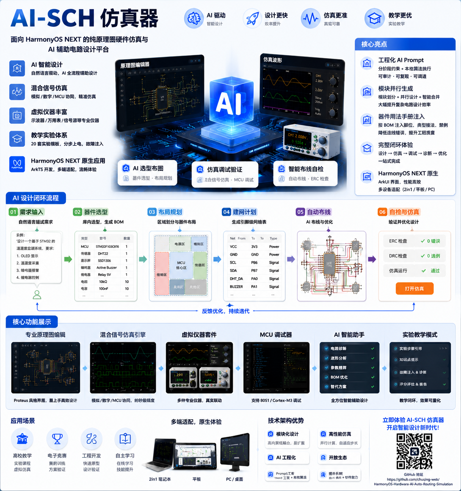
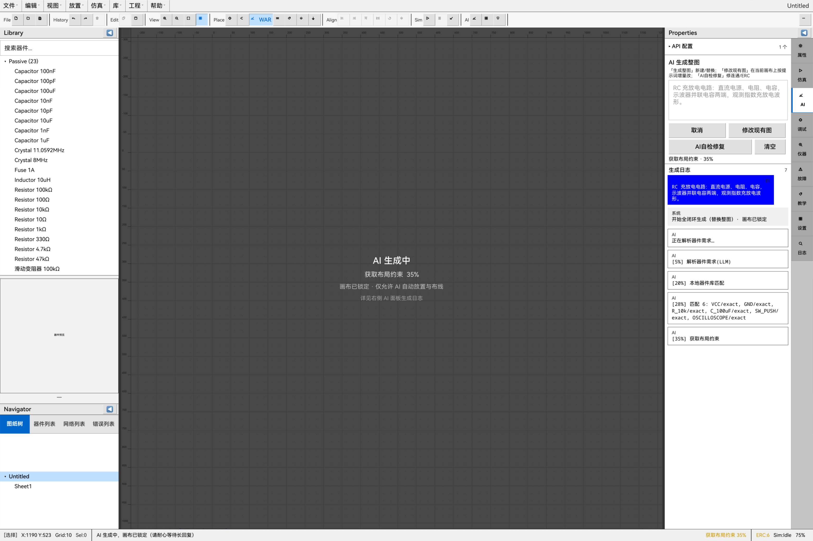
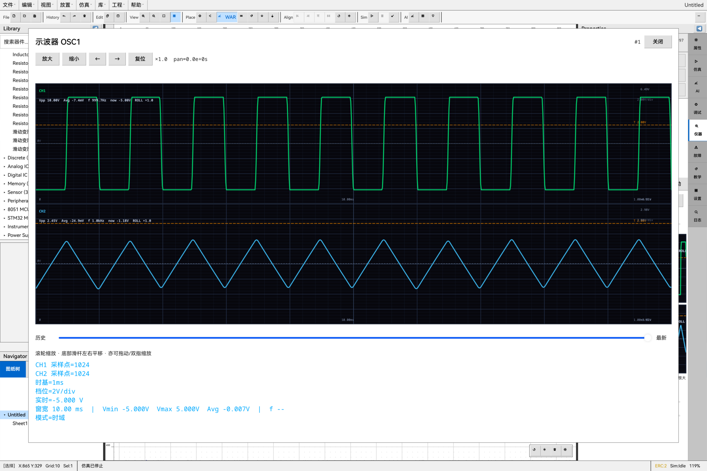
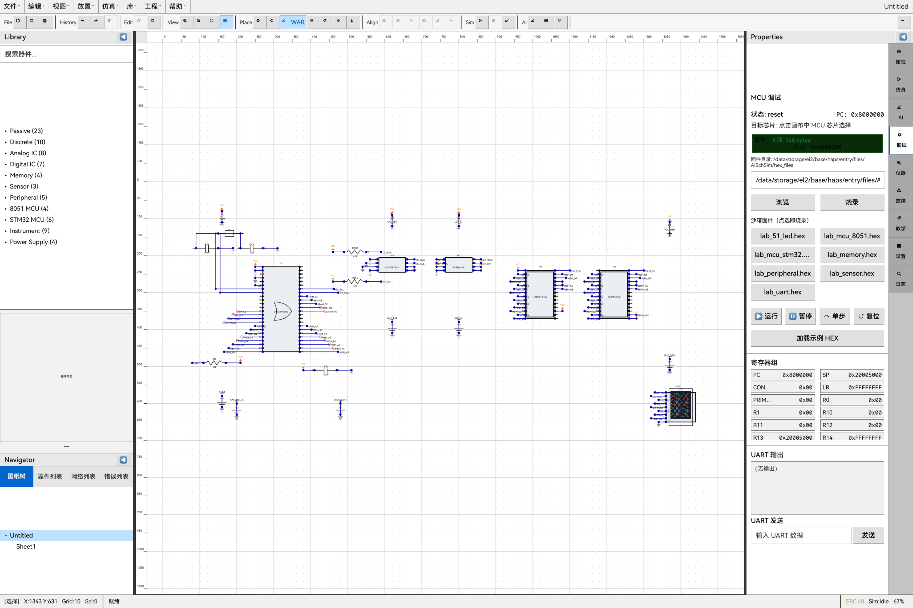
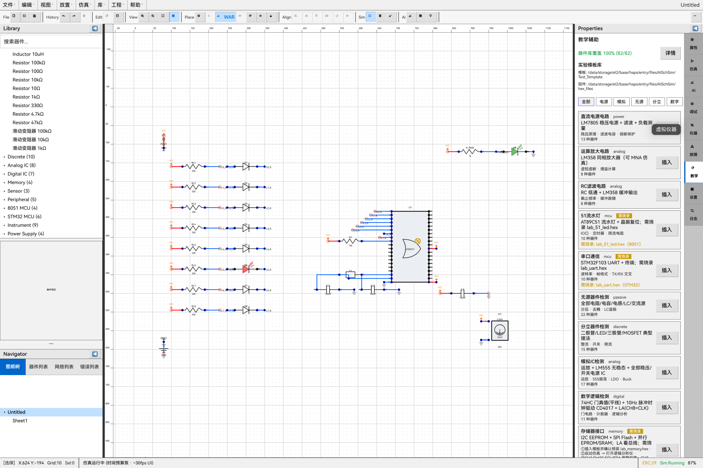

Loading announcement…
Open detailsAI-SCH brings Proteus-class editing and mixed-signal simulation to HarmonyOS — with an engineered multi-agent loop from clarify → place → net → WAR route → QA.
v1.1.0 · Native ArkTS
Loading announcement…
Open detailsPrompts emit structured constraints. Local engines place, net, route, and gate with ERC — never “text as a circuit.”
Analog MNA, event-driven digital, in-process 8051 / Cortex-M3 teaching paths, nanosecond global scheduling.
Lab templates, stepwise power-up, fault injection, instrument binding, and coverage-oriented classroom workflows.
Built for 2-in-1 / tablet on HarmonyOS NEXT with modular HAR architecture and Proteus-flavored UX.

Versioned prompts, multi-agent quality bus, device usage manuals, modular parallel generation.

Scope, logic analyzer, DMM, sources, UART terminal — live-bound to schematic nets.

Intel HEX load, SFR / core registers, breakpoints, virtual UART with instrument loopback.

Dozens of .schsim experiments spanning passives, op-amps, digital gates, MCU, and UART.
Transient / DC / AC paths, interactive pots & switches, fault types for teaching diagnosis.
Annotation, geometry routing aids, copper-layer aware lab templates for teaching boards.
Ask only topology-critical ambiguity
Library-bound BOM, anti-hallucination
Region / adjacency → GA placement
Pin-level nets + usage manuals
Same router as the editor
ERC & geometry hard gates
AI-SCH Simulator (com.elecdraw.aischsim) targets SDK API 12+, Stage model ArkUI, and classroom / contest / pre-validation workflows — filling the gap left by Windows-only EDA toolchains.